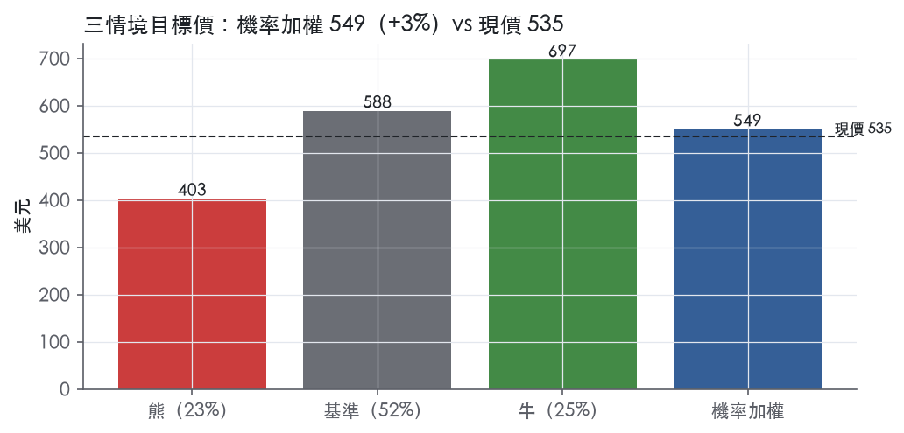
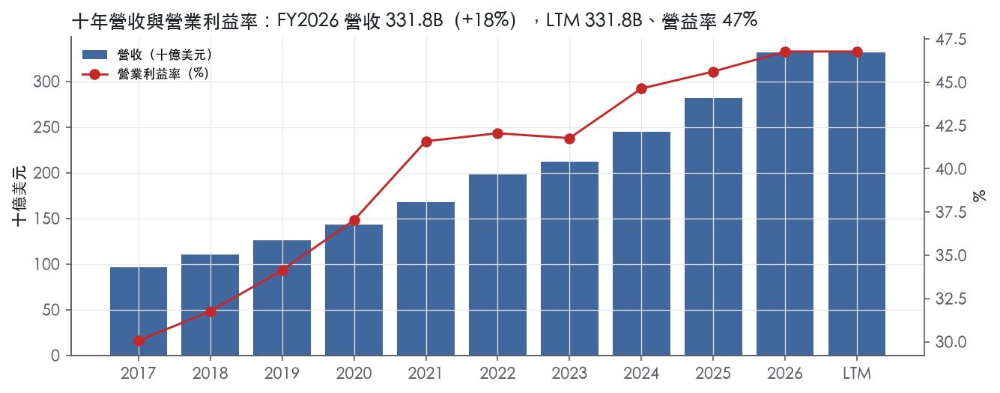
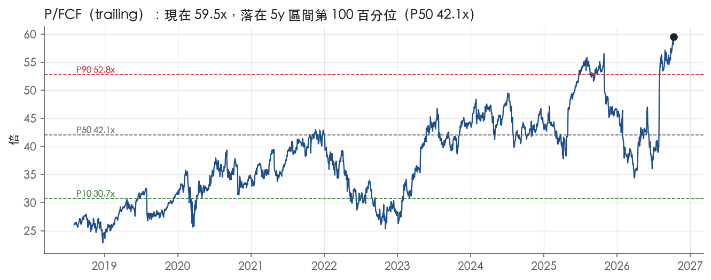
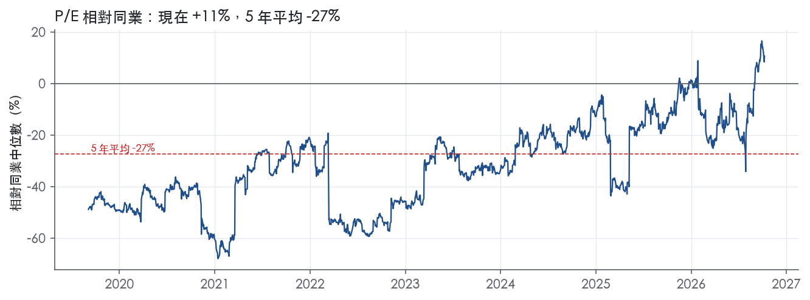
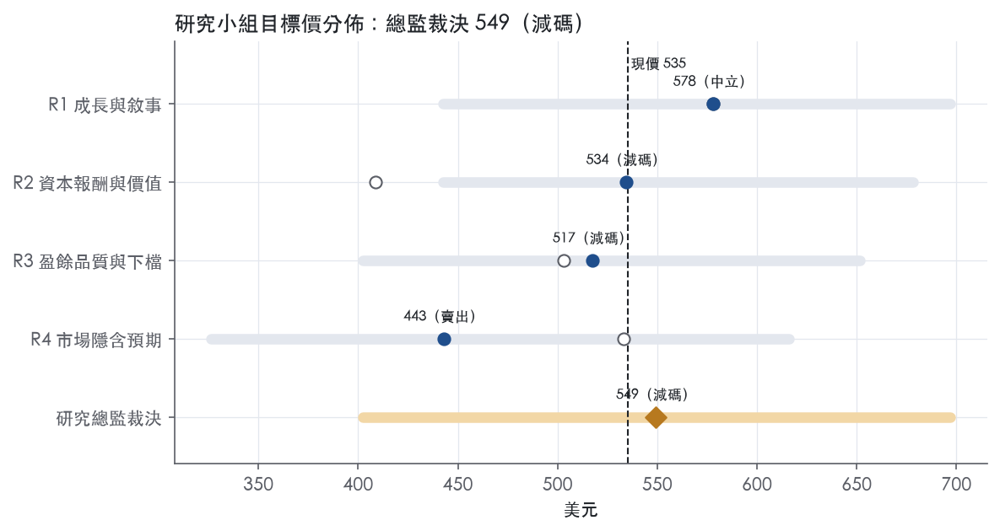
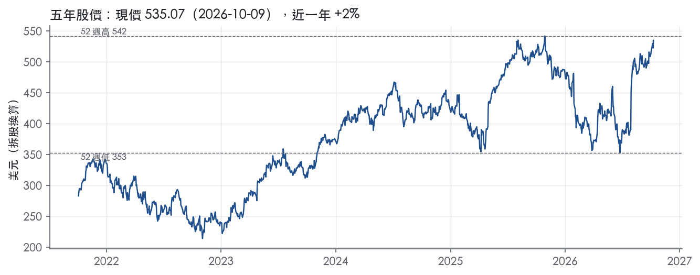

評等總表 › 資訊科技 › MSFT
盈餘計價合理，報酬略低於門檻，中性｜評等 減碼｜目標價 549
| 評等 | 減碼（邊界，鄰近中立） |
| 12 個月目標價 | 549 美元 |
| 現價 | 535.07 美元（2026-10-09） |
| 預期報酬 | 股價 +2.7%＋股息 0.7%＝總報酬 +3.3%；同業籃門檻 10.2%，超額 -6.9% |
| 估值方法 | P/E 31.0x，套在未來四季的EPS |
| 三情境 | 熊 403／基準 588／牛 697 |
| 研究流程 | 四位研究員兩輪辯論＋研究總監裁決 |
| 資料來源 | SEC EDGAR XBRL、Tiingo、FRED（全免費） |
盈餘計價合理，報酬略低於門檻，中性（研究總監裁決，四位研究員兩輪辯論後）
評等 減碼（邊界，鄰近中立）｜12 個月目標價 549 美元（總監三情境機率加權 573 與研究員中位數 526 各半）｜現價 535.07（2026-10-09）
預期報酬：股價 +2.7%＋股息 0.7%＝總報酬 +3.3%。同業籃門檻 10.2%，超額 -6.9%，離中立的分界不到三個百分點，屬邊界評等（落在其他級距的機率約三成）。
估值方法：P/E 31.0x，套在未來四季的EPS。三情境：熊 403（23%）／基準 588（52%）／牛 697（25%）。
立場中性而評等減碼：評等看的是「預期總報酬 3.3% − 同業籃門檻 10.2%」＝超額 -6.9%，不是絕對漲跌；中性但超額偏離門檻，代表情境機率或股利把報酬推離門檻。
什麼會讓研究總監改變看法：FY2027Q1 營益率跌破 47% 且 Azure 低於 35%，我改採 28x 並轉偏空；FY2027 資本支出佔營收回落到 33% 以下且 FCF 年增轉正，我把倍數移向 5 年 P50 33.7x 轉偏多。
| 過去四季（實際，FY2026Q4） | 未來四季 | 第 5–8 季 | 第 9–12 季 | |
|---|---|---|---|---|
| 營收（B） | 331.8B | 384.9B | 435.0B | 478.5B |
| 營收成長 | 17.8% | 16.0% | 13.0% | 10.0% |
| 營業利益率 | 46.8% | 45.5% | 45.0% | 44.0% |
| EPS（美元） | 17.95 | 18.98 | 21.28 | 22.95 |
| EPS 成長 | 31.6% | 5.7% | 12.1% | 7.8% |
| 每股股息（美元） | 3.64 | 3.64 | 3.64 | 3.64 |
| P/E（現價） | 29.8x | 28.2x | 25.1x | 23.3x |
| 股息殖利率（現價） | 0.7% | 0.7% | 0.7% | 0.7% |
過去四季為申報數字；預測為研究總監的假設、程式計算。倍數與殖利率都用現價計算，用來看現價對應各期獲利的高低。
| 情境 | 機率（歷史） | 故事 | 未來四季營收成長 | 第 5–8 季營益率 | 倍數 | 目標價 | 股價漲跌 |
|---|---|---|---|---|---|---|---|
| 熊 | 23%（19%） | 對應風險表第 1、2 條：Azure 連兩季低於 30%，承諾中的建置與租賃砍不掉、折舊去槓桿加減損，P/E 略低於 5 年 P10 | 10.0% | 40.0% | 24.0x | 403 | -24.8% |
| 基準 | 52%（54%） | Azure 與 RPO 撐住雙位數成長，折舊讓營益率溫和下行，市場對經常性盈餘付的倍數不變 | 16.0% | 45.0% | 31.0x | 588 | 9.9% |
| 牛 | 25%（27%） | Copilot 帶動 M365 重新加速、Azure 供給解除、資本支出強度見頂，市場付 5 年 P50 與 P90 之間 | 19.0% | 47.0% | 35.0x | 697 | 30.3% |
目標價由程式依研究總監的驅動與倍數計算；機率由研究總監給定。括號內是歷史頻率：把這檔股票過去十年 12 個月報酬的波動形狀，置中在基準情境，結果落在各情境附近的比例。

四位研究員用不同方法各自估值，回應研究總監的質疑後交出第二輪，最後由總監逐點裁決。各研究員的主張見第七章，裁決理由見第八章，完整論證見《研究底稿》。
| 立場（一輪→二輪） | 加權目標價（一輪→二輪） | 評等（一輪→二輪） | 第二輪倍數 | 熊～牛目標價 | |
|---|---|---|---|---|---|
| R1 成長與敘事 | 中性→中性 | 578→578 | 中立→中立 | 31.0x | 442～697 |
| R2 資本報酬與價值 | 看空→看空 | 409→534 | 賣出→減碼 | 28.0x | 442～678 |
| R3 盈餘品質與下檔 | 中性→看空 | 503→517 | 賣出→減碼 | 28.0x | 403～651 |
| R4 市場隱含預期 | 看空→看空 | 533→443 | 減碼→賣出 | 46.0x | 326～616 |
| 研究總監裁決 | 中性 | 549 | 減碼 | 31.0x | 403～697 |
目標價由程式依各自的驅動與倍數計算；評等＝機率加權總報酬 − 同業籃門檻。
Microsoft 是一家以生產力軟體、雲端基礎設施與個人運算三大業務支撐的科技公司，近年將 AI 列為橫跨所有業務層的核心戰略。公司自述使命為「empower every person and every organization on the planet to achieve more」¹。公司提供涵蓋 AI、軟體、服務、平台與內容的雲端解決方案，並提供解決方案支援與顧問服務，同時也對全球受眾投放線上廣告¹。產品線包括作業系統、伺服器應用程式、商業解決方案應用程式、軟體開發工具、桌面與伺服器管理工具、電玩遊戲，以及 PC、平板、遊戲與娛樂主機等裝置¹。客戶群從大型跨國企業、公部門組織到中小企業與一般消費者皆有覆蓋，透過直接與間接（夥伴）雙軌通路銷售¹。LTM 營收 331.84B 美元，規模與產品覆蓋面使其同時暴露在企業 IT 預算與消費端裝置週期。
公司依三大報告分部管理財務表現：Productivity and Business Processes、Intelligent Cloud、More Personal Computing¹。Productivity and Business Processes 主要包含 Microsoft 365 Commercial 與 Consumer 雲端服務、LinkedIn、Dynamics 365，FY2026Q4 營收 37.8B 美元、年增 14%²；FY2026 全年 Azure 營收首次突破 100B 美元²。Intelligent Cloud 涵蓋 Azure、GitHub、Health and Life Sciences 雲端服務及伺服器產品（SQL Server、Windows Server、Visual Studio 等），FY2026Q4 營收 39.3B 美元、年增 32%，其中 Azure and other cloud services 營收年增 43%，是全集團成長最快的子業務²。More Personal Computing 包含 Windows OEM 授權、Surface 裝置、XBOX 硬體與內容服務、搜尋廣告，FY2026Q4 營收 12.9B 美元、年減 4%，其中 Windows OEM and Devices 營收減 7%、XBOX content and services 營收減 10%，僅搜尋廣告（不含流量取得成本）年增 10%²。三大分部呈現明顯分化：雲端兩大分部（P&BP、Intelligent Cloud）帶動成長，More Personal Computing 持續衰退或停滯。10-K 未揭露各分部占總營收精確比重，但以 FY2026Q4 數字估算，Intelligent Cloud（39.3B）已略超過 P&BP（37.8B），MPC（12.9B）為最小分部。
公司透過直接銷售與間接夥伴網路雙軌觸達客戶，直接銷售對象從大型跨國企業、公部門到中小企業，間接通路則透過全球夥伴網路支援產品的銷售、部署與管理¹。OEM 廠商在裝置出廠前授權並預先安裝 Microsoft 軟體，部分產品與服務亦透過線上採購管道與數位市集提供¹。公司提供多種數量採購方案，針對大型企業、中型組織、小型企業、教育機構與政府單位設計彈性的購買、部署與管理選項¹。地區方面，10-K 未在 Item 1 揭露具體地理營收分布（細節列於財報附註 Note 18），僅說明公司在美洲、亞太、歐洲與中東設有全球營運服務中心，並於各區域布建資料中心¹。截至 2026 年 6 月 30 日，公司全職員工約 223,000 人，其中美國 121,000 人、海外 102,000 人¹，顯示公司營運與人力配置高度美國本土集中但業務全球化。
FY2026Q1（截至 2025-09-30）營收 77.67B 美元、年增 18.4%，EBITDA 46.56B 美元（等對應八季表）。FY2026Q2（截至 2025-12-31）營收攀升至 81.27B 美元、年增 16.7%，淨利大幅跳升至 38.46B 美元、EPS 5.16（八季表 FY2026Q2），主要受惠一次性因素推升。FY2026Q3（截至 2026-03-31）營收 82.9B 美元、年增 18%（上年同期 70.1B 美元），營業利益 38.4B 美元、年增 20%，GAAP 淨利 31.8B 美元、年增 23%，GAAP EPS 4.27 美元、年增 23%³；Nadella 表示 AI 業務年化營收跑率已超過 37B 美元、年增 123%³；該季 Microsoft Cloud 營收 54.5B 美元、年增 29%，商業未履約義務（RPO）年增 99% 至 627B 美元³；三大分部中 Intelligent Cloud 營收 34.7B 美元年增 30%（Azure 年增 40%），P&BP 營收 35.0B 美元年增 17%，MPC 營收 13.2B 美元年減 1%³。FY2026Q4（截至 2026-06-30）營收 90.0B 美元、年增 18%，營業利益 40.6B 美元、年增 18%，GAAP 淨利 35.8B 美元、年增 31%，GAAP EPS 4.81 美元、年增 32%²；該季因投資 Anthropic 帶來 3.2B 美元收益、及 Voluntary Retirement Program 費用低於預期，部分被 XBOX 資遣與減損費用抵銷，合計使 EPS 較財測多出 0.27 美元²；Microsoft Cloud 營收 59.3B 美元、年增 27%，商業 RPO 年增 84% 至 678B 美元²；Nadella 指出全年 Azure 營收首次突破 100B 美元，Microsoft 365 Copilot 付費席位突破 3,000 萬²。FY2026 財年未附帶下一季具體財測文字，新聞稿僅說明「Microsoft will provide forward-looking guidance in connection with this quarterly earnings announcement on its earnings conference call」²。FY2026 全年營收 331.8B 美元、年增 18%，GAAP 淨利 133.7B 美元、年增 31%，GAAP EPS 17.95 美元、年增 32%²。整體而言，近四季呈現雲端兩大分部（P&BP、Intelligent Cloud）持續加速、MPC 持續拖累，且 FY2026Q4 淨利成長明顯受一次性投資損益放大。
公司將研發聚焦三大相互關聯的方向：重塑生產力與商業流程、打造智慧雲與智慧邊緣平台、創造更個人化的運算體驗¹。公司表示未來成長有賴於「transcend current product category definitions, business models, and sales motions」¹，並列出多項重點投資方向，包括全方位處理安全議題、以 Microsoft 365 Copilot 與 agents 應用 AI 驅動生產力提升、協助客戶實現「frontier transformation」、為企業 AI 提供「unified intelligence layer」，以及透過 Windows 帶動雲端業務與服務互動（Edge、Bing、Copilot、Teams、XBOX Game Pass 等）¹。Nadella 在財報中強調公司正「advancing the frontier on the cost-to-outcome curve」，讓每位客戶都能把 token 轉化為商業成果²，並指出 Azure 年營收首次突破 100B 美元、Copilot 付費席位超過 3,000 萬，反映客戶對 Microsoft 推動其 AI 轉型的信心²。CFO Amy Hood 則聚焦 Microsoft Cloud 營收規模與年增率作為營運動能指標²。整體看，Microsoft 的敘事已從「生產力＋雲端」轉為「AI 基礎設施＋應用層」雙軸心，Azure 與 Copilot 是目前驅動營收與估值敘事的兩大引擎。但 MPC 分部（尤其 Windows OEM 與 XBOX）持續年減，顯示傳統裝置與消費端業務對集團成長的邊際貢獻已轉為負值，公司資源配置重心明顯向雲端與 AI 傾斜。資本支出占營收比重於 FY2026 達 34.9%，遠高於歷史水平，反映 AI 基礎設施投資強度已成為觀察自由現金流壓力的關鍵變數。

我們給 Microsoft 寬護城河評級，因為有把握未來 10 年以上 ROIC 仍高於資本成本。支撐這個判斷的是兩件事：企業軟體的轉換成本，以及雲端的規模成本優勢，兩者短期都難以複製。趨勢判為變窄，理由不是競爭地位下滑，而是商業模式正從輕資產授權轉向重資產 AI 基礎設施。ROIC 已從十年平均 67.4% 降到最新 35.9%，而且還沒有止穩跡象。
最核心的來源是轉換成本，其次是成本優勢，網路效應與無形資產為輔助。
轉換成本：
成本優勢：
網路效應：
無形資產：
效率規模：10-K 沒有提供證據，不列入。
毛利率與營益率完全支持寬護城河，ROIC 也支持，但 ROIC 的方向與寬護城河「穩定」的特徵有衝突。
支持寬護城河的數字：
與寬護城河衝突的數字：
為什麼仍維持寬評級：
最大的侵蝕來源是 AI 基礎設施的資本密集度，可能把 Microsoft 從高 ROIC 軟體公司拉向公用事業型的報酬結構。
| 指標 | 最新 | 十年平均 | 標準差 | 最低 | 最高 |
|---|---|---|---|---|---|
| ROIC | 35.9% | 67.4% | 32.6% | 23.8% | 117.1% |
| 毛利率 | 67.9% | 67.6% | 1.7% | 64.5% | 69.8% |
| 營業利益率 | 46.8% | 39.5% | 5.6% | 30.1% | 46.8% |
| FCF 利潤率 | 20.2% | 29.4% | 3.8% | 20.2% | 33.4% |
| ROE | 34.0% | 37.7% | 8.0% | 19.4% | 47.2% |
程式計算。資本成本代理值（10 年債＋5%）：10.2%；ROIC 平均減資本成本：57.2%；ROIC 有資料的 9 年中，高於資本成本 9 年。
營業現金流／淨利 LTM 1.37x、近三年 1.35x、十年平均 1.46x，三個期間都在綠燈區，顯示淨利有現金流支撐，不是靠應計堆出來的。應計比率 LTM -6.8%、近三年 -6.6%、十年平均 -6.0%，全部為負值且綠燈，代表公司現金流持續優於淨利，應計項目反而是拖累而非推升盈餘。但自由現金流／淨利 LTM 僅 0.50x、近三年平均 0.68x，雙雙落入紅燈區，與十年平均 0.99x 明顯脫鉤。這個缺口不是盈餘灌水的問題，而是資本支出暴增：FY2026 資本支出／營收達 34.9%，較 FY2025 的 22.9% 跳升超過十個百分點，10-K 也明確指出投資活動現金流增加主因是「additions to property and equipment」增加 51.4B⁴。換句話說，現金有跟上淨利，但跟不上「資本支出前」的自由現金流定義，是AI基礎設施擴張造成的真實現金流出，不是會計操作。
FY2026 GAAP 淨利 133,749M、稀釋EPS 17.95，非GAAP調整後淨利 128,786M、調整後EPS 17.28，唯一的調整項是排除OpenAI投資的淨損益⁴。FY2026當期因OpenAI投資淨利得，使淨利與EPS分別增加5.0B與0.67美元；FY2025同期則是淨損3.6B、EPS減少0.49美元⁴。這筆利得主要來自OpenAI Recapitalization所產生的稀釋利得（dilution gain），屬於權益法投資的非現金、非經常性項目⁴。單季（Q4）另有一筆Anthropic投資利得3.2B，以及Voluntary Retirement Program費用低於預期，但被XBOX資遣與減損費用部分抵銷，合計對EPS造成0.27美元的正向意外差異²。這些都是我認定「真實成本/利得但非經常性」的項目：OpenAI/Anthropic利得是非現金、市值連動的投資收益，不應視為營業獲利能力的提升；XBOX減損與資遣費用是真實現金/會計成本，已反映在GAAP營業費用裡，公司並未把它加回非GAAP。研發費用增加3.1B中也包含「impairment and other related expenses in our XBOX business」⁴，顯示遊戲業務的減損是跨多個費用科目出現的真實一次性負擔。
淨負債為 -36.55B（即淨現金），淨負債／EBITDA LTM -0.19x、近三年 -0.23x，槓桿燈號全綠，公司事實上是淨現金公司。利息保障倍數 LTM 50.9x、近三年 47.4x，遠高於8倍的綠燈門檻，付息能力不是問題。FY2026回購36百萬股、花費16.7B，股利宣告27.0B，兩者合計規模持續擴大⁴，但（股利＋回購）／淨利 LTM僅36.4%，低於近三年40.8%與十年平均72.7%，燈號為黃；這不是回饋力度下降，而是分母（淨利）被OpenAI利得撐大所致，稀釋股數年變動僅0.1%（黃燈）也顯示回購僅勉強抵銷新增股數，未能實質收縮股本。資本配置的重頭戲在未來承諾：建置承諾34,566M、採購承諾194,060M、租賃（含隱含利息）總額443,506M，全部與資料中心/AI基礎設施擴張相關⁴，這代表未來數年的現金需求會持續墊高，雖然目前帳上現金及短期投資仍有76.8B、且淨現金為正，短期無壓力⁴。
自由現金流／淨利紅燈：真實原因，不是假警報，資本支出／營收從22.9%跳到34.9%，10-K直接點名「a $51.4 billion increase in additions to property and equipment」是現金流出主因⁴，這是AI基礎設施的成長性資本支出，會壓縮FCF轉換但不代表盈餘品質惡化。 存貨成長超越營收31.1pp（FY2026）：程式紅旗但原文沒有直接拆解存貨科目，10-K僅提及資料中心依賴「predictable energy, networking supplies, and servers, including graphics processing units and other components」的可得性⁴，推測是為支應AI伺服器/GPU建置而提前囤料，屬於業務擴張帶來的營運資金變化而非舞弊或需求轉弱訊號，但因原文未明確量化說明，我把它列為「可解釋但待觀察」而非完全排除。 淨利率FY2017→FY2018跳動-11pp、FY2018→FY2019跳動+16pp：這兩次跳動發生在本次拿到的10-K（FY2026申報，僅涵蓋FY2026對FY2025的比較敘述）揭露範圍之外，手上的MD&A原文沒有對應段落可以引用佐證。市場普遍認知FY2018淨利大跌與美國2017年稅改一次性過渡稅有關，FY2019回升則是稅負正常化，但因為沒有本次資料包提供的原文可以直接引用數字，這段判斷標記為個人推論，不作為量化結論的依據，且因年代久遠對目前LTM品質評估的影響可忽略。
估值應該以非GAAP調整後EPS（17.28）而非GAAP EPS（17.95）為盈餘基礎，因為GAAP數字裡有5.0B、每股0.67美元是OpenAI非現金投資利得，不具備重複性。FCF因AI資本支出走弱，若用FCF殖利率（量化底稿顯示1.7%）或P/FCF（59.5x，處於5年區間第99.9分位）做估值錨點，應該理解這是資本支出高峰期的暫時性壓縮，而非永久性現金生成能力下降，但在資本支出需求尚未見頂前，不宜用FCF倍數單獨定價。槓桿面淨現金、利息保障50倍，完全不構成限制估值倍數的理由，估值的風險主要來自盈餘品質中的非經常性利得與資本支出強度，而非資產負債表。
| 項目 | LTM | 近三年 | 十年 | 燈號 | 規則 |
|---|---|---|---|---|---|
| 營業現金流／淨利 | 1.37x | 1.35x | 1.46x | 綠 | ≥1.00x 綠、<0.80x 紅 |
| 自由現金流／淨利 | 0.50x | 0.68x | 0.99x | 紅 | ≥0.90x 綠、<0.60x 紅 |
| 應計比率（(淨利−CFO)／平均總資產） | -6.8% | -6.6% | -6.0% | 綠 | ≤0.0% 綠、>5.0% 紅 |
| SBC／營收 | 3.7% | 4.1% | 3.9% | 黃 | ≤3.0% 綠、>8.0% 紅 |
| 淨負債／EBITDA | -0.19x | -0.23x | -0.42x | 綠 | ≤1.50x 綠、>3.00x 紅 |
| 利息保障倍數（營業利益／利息） | 50.9x | 47.4x | 32.0x | 綠 | ≥8.00x 綠、<3.00x 紅 |
| 稀釋股數年變動 | 0.1% | -0.1% | -0.5% | 黃 | ≤0.0% 綠、>3.0% 紅 |
| （股利＋回購）／淨利 | 36.4% | 40.8% | 72.7% | 黃 | ≥50.0% 綠、<0.0% 紅 |
| 應收帳款成長 − 營收成長（FY2026） | -2.1pp | — | — | 綠 | ≤5pp 綠、>15pp 紅 |
| 存貨成長 − 營收成長（FY2026） | +31.1pp | — | — | 紅 | ≤5pp 綠、>15pp 紅 |
程式計算；燈號以 LTM（無則近三年平均）判定。
| 風險 | 觸發指標（看什麼數字、在哪裡看） | 對 EPS 的影響方向與粗略幅度 | 未來 12 個月發生機率（高／中／低） | 出處 |
|---|---|---|---|---|
| AI／資料中心資本支出效益不如預期，壓縮自由現金流與margin | 每季 Capex/營收比（FY2026 已達 34.9%）、FCF（LTM 66.99B）、Azure 年增率是否放緩 | 方向：負；FCF 已自 FY2025 71.61B 降至 FY2026 66.99B，資本支出強度為歷史新高 | 高 | ＋⁵ |
| Azure／AI 需求不如預期導致基礎設施利用率不足、資產減損 | Azure 營收年增率（FY2026Q4 為 43%²）逐季變化、是否出現資產減損揭露 | 方向：負，幅度中大；一旦減損將直接列入營業利益 | 中 | 10-K 年報 FY2026 Item 1A（風險因素） |
| 反壟斷與數位市場監管（EU、美國、中國）限制商業模式或處罰 | 監管機關裁罰公告、新法規生效日（如 EU AI Act） | 方向：負，幅度中；可能限制產品銷售方式或課以罰款 | 中 | 10-K 年報 FY2026 Item 1A（風險因素） |
| 網路安全事件（國家級攻擊、供應鏈滲透）造成營運中斷或信譽損失 | 新 8-K 資安事件揭露、客戶流失率、訴訟進展 | 方向：負，幅度中；參考過去事件（2024年1月揭露的國家級行為者入侵事件）⁵ | 中 | 10-K 年報 FY2026 Item 1A（風險因素） |
| IRS 跨年度移轉定價爭議，若補稅成立將一次性衝擊淨利 | IRS 訴訟進展公告、公司季報稅務揭露段落 | 方向：負；IRS 就 2004–2013 年度提出 Notice of Proposed Adjustment，要求補繳額外稅款 28.9B 美元（不含罰金與利息）⁵ | 低 | 10-K 年報 FY2026 Item 1A（風險因素） |
AI 資本支出效益風險排第一，因為它同時影響估值倍數與現金流，且已經在發生。 公司自己承認「這些投資規模龐大且節奏加快，需要持續且增加的資本支出，且領先於完全發展的營收來源」，「相關營收可能無法在預期時程或預期水準實現」⁵。資料包顯示 FY2026 資本支出占營收比重已達 34.9%，遠高於 FY2023 的 13.3%（量化底稿年度表），而 FCF 從 FY2025 的 71.61B 降到 FY2026 的 66.99B，即便營收成長 17.8%（量化底稿年度表）。這代表即使營收持續成長，FCF 殖利率（目前僅 1.7%）與 P/FCF（59.5x，處於 5 年 99.9 分位）已經反映極緊的預期，一旦 Azure 消費成長放緩，市場會立刻重新評估這個倍數。
第二條是需求與資產利用率不匹配的風險，公司原文明確點名「高估需求或產能投資錯配可能導致基礎設施利用不足，並可能導致資產負債表資產減損」⁵。 Azure 成長率是最直接的觀測指標：FY2026Q4 為 43%、Q3 為 40%²，一旦這個數字連續兩季低於 30%，應視為警訊。
第三條是監管風險，公司列出競爭法、AI 立法（EU AI Act）、貿易管制等多重壓力，指出「新的市場監管義務可能限制我們提供軟體效益的能力，降低產品吸引力與相關營收」⁵。 這類風險難以精確量化，但一旦裁罰公告出現，會直接反映在特定分部（如搜尋廣告、Windows OEM）的合規成本上升。
第四條是網路安全，公司揭露 2024 年 1 月 8-K 所述的國家級行為者攻擊事件，指出「該威脅行為者可能持續利用此資訊及其他資訊試圖存取我們的系統，或以其他方式對我們的業務及經營成果造成不利影響」⁵。 這類事件的財務衝擊通常是訴訟與信譽成本，難以在單一財季完全反映，但會持續累積。
第五條是 IRS 稽核爭議，公司明確寫出金額：「IRS 就該等建議調整，正在尋求額外稅款 28.9B 美元，外加罰金與利息」⁵，爭議涵蓋 2004 至 2013 年度的跨國移轉定價問題⁵。 由於爭議年度久遠且涉及訴訟，實際落地機率低，但若最終不利判決確定，將是一次性認列的重大淨利衝擊。
一次性損益（如 Anthropic／OpenAI 投資公允價值變動）正在放大季度 EPS 波動，掩蓋營運本質成長率。 FY2026Q4 GAAP 淨利因 Anthropic 投資獲利 3.2B 美元、及 Voluntary Retirement Program 費用低於預期，使 EPS 較財測高出 0.27 美元²；FY2026 全年 OpenAI 投資對 EPS 影響達 0.67 美元（量化底稿／新聞稿 Non-GAAP 調節表）。若未來 OpenAI／Anthropic 等戰略投資公允價值反轉為虧損（如 FY2025 曾衝擊 EPS 達 0.49 美元²），GAAP EPS 將出現非營運性大幅波動，投資人若只看 GAAP 數字容易誤判营運趨勢。
More Personal Computing 分部持續年減，可能侵蝕集團整體營益率結構，但 10-K 風險章未單獨點名此分部。 FY2026Q4 該分部營收年減 4%，其中 Windows OEM and Devices 年減 7%、XBOX content and services 年減 10%²；若此分部持續拖累合併營收成長，而雲端分部成長放緩，集團整體成長動能將快速收斂，這是目前倍數隱含的「雲端無限期高成長」敘事中的一個結構性缺口。
現價 535.07 對應 trailing（過去四季）P/E 29.8x、EV/EBITDA 20.3x、EV/EBITA 24.6x、EV/Sales 11.9x、FCF 殖利率 1.7%。主要估值倍數 P/FCF 現在 59.5x，落在5 年區間第 100 百分位（P10／P50／P90 = 30.7x／42.1x／52.8x）。

把程式的機械基準預測放到現價下，市場付的前瞻倍數是：P/FCF（未來四季） 57.8x、P/E（未來四季） 27.9x、P/FCF（第 5–8 季） 52.3x、P/E（第 5–8 季） 25.3x。反推 DCF 顯示市價隱含未來五年營收年成長 31.0%（WACC 9.0%、終值成長 3.0%、FCF 利潤率 15.1%，SBC 不加回）。
| 倍數 | 現在 | 5 年 P10 | 5 年 P50 | 5 年 P90 | 現在分位 | 全期 P50 |
|---|---|---|---|---|---|---|
| P/E | 29.8x | 25.1x | 33.7x | 37.9x | 31.6% | 33.7x |
| EV/EBITDA | 20.3x | — | — | — | — | 18.9x |
| EV/EBITA | 24.7x | 20.0x | 26.1x | 29.8x | 38.6% | 25.6x |
| EV/EBIT | 25.5x | 20.7x | 26.9x | 30.9x | 37.8% | 26.1x |
| EV/Sales | 11.9x | 9.0x | 11.7x | 13.6x | 53.9% | 10.6x |
| P/S | 12.0x | 9.2x | 12.0x | 13.8x | 50.5% | 11.0x |
| P/FCF | 59.5x | 30.7x | 42.1x | 52.8x | 99.9% | 37.7x |
trailing 倍數（股價 ÷ 過去四季）；分位以每個交易日計算。
同業籃：ADBE, ADSK, TEAM, ACIW, BSY, BILL（SIC 7372 同業 39 家中，CY2025 營收最接近的 6 家）。評等門檻 10.2%：同業「倍數不變下持有一年」的隱含報酬中位數（＝ FCF 殖利率 ×(1＋g)＋g，g 為 5 年營收年複合成長並夾在 −2%～8%），每家夾在 0～15%、P/E 低於 5 倍視為資料可疑而排除，中位數再限制在 10 年債到 10 年債＋5% 之間（同業原始中位數 13.5%）。
| 代號 | 市值 | 5 年營收 CAGR | 營益率 | ROIC | P/E | 5 年 P/E 中位數 | EV/EBITDA | P/FCF | 隱含報酬 |
|---|---|---|---|---|---|---|---|---|---|
| MSFT | 3,974.0B | 14.6% | 46.8% | 35.9% | 29.8x | 33.7x | 20.3x | 59.3x | 9.8% |
| ADBE | 94.7B | 13.1% | 35.7% | 111.5% | 13.6x | 37.4x | 9.0x | 8.9x | 20.1% |
| ADSK | 49.7B | 13.7% | 26.2% | 149.2% | 30.5x | 55.2x | 21.0x | 17.5x | 14.2% |
| TEAM | 53.8B | 25.8% | 0.2% | 6.6% | — | — | 354.6x | 40.8x | 10.6% |
| ACIW | 5.1B | 6.3% | 18.6% | 11.4% | 23.4x | 25.4x | 13.3x | 16.5x | 12.8% |
| BSY | 11.2B | 13.4% | 23.6% | 12.3% | 38.6x | 66.2x | 28.2x | 22.4x | 12.8% |
| BILL | 4.1B | 47.3% | -4.4% | -2.1% | — | — | — | 10.0x | 18.8% |
| 同業中位數 | 13.5% | 21.1% | 11.8% | 26.9x | 46.3x | 21.0x | 17.0x | 10.2% |
全部 trailing，程式以各公司 SEC XBRL 與 Tiingo 行情計算；第一列為本檔。
P/E 相對同業中位數：現在 10.6%，過去 1 年平均 -9.4%、3 年 -18.5%、5 年 -27.2%；EV/EBITDA 相對同業中位數：現在 -3.0%，過去 1 年平均 -12.8%、3 年 —、5 年 —。

事後實現前瞻倍數帶（P/FCF，2018-08-17..2025-08-15）：P10／P50／P90 = 21.8x／31.1x／43.6x。它是每個交易日的股價除以之後四季實際實現的指標；一年後，今天的第 5–8 季正是那時的未來四季，所以這條帶是 12 個月目標價的同口徑倍數。因為用的是事後實際而非當時預期，過去成長超乎預期的公司這條帶會偏低。
程式的機械基準（成長率從過去四季年增率三年收斂到 6%、利潤率持平）用 事後實現前瞻 P/FCF P50 估值得到 319（-40.5%），市場現行前瞻倍數（現價 ÷ 基準 未來四季指標）一年後持平，套在基準 第 5–8 季指標得到 592。這兩個數字只是參考點，不是本報告的目標價；研究員對這個定價的回應在第七章。
下表是每位研究員第一輪（各自獨立）與第二輪（回應研究總監的質疑後）的結果。目標價全由程式依各自的假設計算。
| 立場（一輪→二輪） | 加權目標價（一輪→二輪） | 評等（一輪→二輪） | 第二輪倍數 | 熊～牛目標價 | |
|---|---|---|---|---|---|
| R1 成長與敘事 | 中性→中性 | 578→578 | 中立→中立 | 31.0x | 442～697 |
| R2 資本報酬與價值 | 看空→看空 | 409→534 | 賣出→減碼 | 28.0x | 442～678 |
| R3 盈餘品質與下檔 | 中性→看空 | 503→517 | 賣出→減碼 | 28.0x | 403～651 |
| R4 市場隱含預期 | 看空→看空 | 533→443 | 減碼→賣出 | 46.0x | 326～616 |
| 研究總監裁決 | 中性 | 549 | 減碼 | 31.0x | 403～697 |
目標價由程式依各自的驅動與倍數計算；評等＝機率加權總報酬 − 同業籃門檻。
分歧度：第一輪 加權目標價 409～578（區間＝現價的 32%）· 倍數 28～54x · 立場 中性×2、看空×2；第二輪 加權目標價 443～578（區間＝現價的 25%）· 倍數 28～46x · 立場 中性×1、看空×3。

| 研究員 | 第二輪主張 | 堅持的理由 |
|---|---|---|
| R1 成長與敘事 | 中性，31x P/E：Azure 與 RPO 撐住雙位數成長。 | 現行 29.8x 含投資利得，31x 只是經常性盈餘倍數持平。 |
| R2 資本報酬與價值 | 偏空，28x P/E：股價大致持平，跑輸同業門檻。 | 資本支出遠高於折舊，EPS 高估業主盈餘，倍數該低於現行。 |
| R3 盈餘品質與下檔 | 偏空，28x P/E：營業盈餘可信，但現金轉換率腰斬。 | FCF／淨利只剩 0.50x，十年平均是 0.99x，不該給到現行倍數。 |
| R4 市場隱含預期 | 偏空，46x P/FCF：市場預付了 FCF 回升，回升會延後。 | 歷史 P/FCF 中段來自低資本支出年代，不能拿來錨定現在。 |
每位研究員的逐條回應與完整論證見《研究底稿》（MSFT_研究底稿_2026-10-13.docx）。
| 分歧點 | R1 成長 | R2 價值 | R3 品質 | R4 預期 | 什麼資料會分出勝負 |
|---|---|---|---|---|---|
| 1. 估值尺 | eps@ntm 31x | 由 fcf 45x 改 eps@ntm 28x | eps@ntm 28x；套 P/FCF 帶得隱含 P/E 16.6x 是口徑錯配 | fcf@q5_q8 46x，錨在事後實現帶 P90 43.6x 上方 | FY2027 全年 FCF／淨利是否自 0.50x 回升；FY2027Q1 財報後股價跟 EPS 還是跟 FCF 走 |
| 2. 目標 P/E 水準 | 31x：29.8x 分母含投資利得，經常性口徑是持平 | 28x：ROIC 連降、資本支出遠高於 D&A | 28x：乾淨口徑更貴、FCF/淨利 0.50x、營益率連四季下滑 | 不適用 | FY2027Q1 營益率相對 48.9% 的年增變化、Azure 年增 |
| 3. Q5–Q8 營收成長 | 13% | 13% | 12% | 14% | FY2027Q2 商業 RPO 與 Azure 年增率 |
| 4. 營益率 Y1/Y2/Y3 | 45.5/45/45 | 46/45/44 | 45/44.5/44 | 45/44/43.5 | FY2027 各季 D&A 佔營收、Q1 營益率 |
| 5. 熊情境深度 | 12/8/6%、25x→442 | 14/11%、24x→442 | 10/6/5%、營益率 39–42.5%、24x→403 | 14/9/6%、39.6x fcf→326 | Azure 是否連兩季低於 30%、是否揭露減損 |
分歧一：用 P/E，裁定 R3（R1、R2 同側）。 R4 的 46x 要市場在一年內把 Q5–Q8 的 FCF 倍數從現價隱含的 52.3x壓下去，機制是「市場預付了 FCF 回升，承諾合約會讓回升延後」。三個證據反對。第一，建置 34,566M、採購 194,060M、租賃 443,506M 的承諾⁴7 月底已公開，股價 535.07仍貼著 52 週高點 542.07，市場沒把承諾當壞消息。第二，若市場真用 FCF 回升敘事定價，P/E 應貼在帶頂，但現行 29.8x 只在 5 年帶 31.6% 分位；P/FCF 59.5x 在 99.9% 分位是分母被資本支出壓低的算術結果，不是市場付了溢價。第三，R4 自己承認帶中段對應 11–18% 的資本支出強度（–FY2024），一條承認分母不可比的帶不能當主尺，P90 上方或 P75 都是在錯尺上挑刻度。反推 DCF 隱含 5 年成長 31.0%（固定 FCF 利潤率 15.1%）只證明市場假設資本支出終會正常化，時程遠超 12 個月。劇本自列 pe_q5_q8 為交叉驗證，財務體質章與護城河章也都建議在資本支出高峰改用盈餘倍數。
分歧二：31x，裁定 R1。 29.8x 的分母是 GAAP EPS 17.95，內含 OpenAI 利得每股 0.67 與第四季 Anthropic 利得 3.2B²；對非 GAAP 17.28 的現行倍數高於 29.8x，再剔除 Anthropic 更高。所以 31x 套在模型的經常性 NTM EPS 上，是「市場繼續付現在對經常性盈餘付的倍數」，程式表的 +4% 是 GAAP 口徑造成的錯覺。R2、R3 壓到 28x 的三條理由：（一）資本支出 34.9% 遠高於 D&A 11.8%、折舊追上前 EPS 高估業主盈餘——這正是我把營益率從 46.8% 下修到 45.5／45／44 的理由，再壓倍數是重複計算；（二）ROIC 從 104.9%到 35.9%、FCF／淨利 0.50x——都是已公開一年以上的趨勢，市場的回應就是現行倍數即便以非 GAAP 口徑上修後仍低於 5 年 P50 33.7x，折價已經給了；（三）「連四季下滑 48.9%→45.1%」有一半是季節性：FY2025 同序列 46.6%→45.5%→45.7%→44.9%（–Q4）形狀相同，真正的訊號是年增幅逐季縮小、第四季 45.1% 對 44.9% 幾乎持平，而該季還含 XBOX 資遣與減損²。這個訊號我放進營益率驅動，不放進倍數。R2 看不到八季表，R3 看得到但沒拆季節性，這是兩人證據的缺口。R2 的「28x 略高於同業中位數 26.9x」也不成立：ADBE P/E 13.6x、TEAM 與 BILL 無 P/E，同業中位數是被重挫的倍數，不是錨。
分歧三：Q5–Q8 成長 13%，裁定 R1（R2 同值）。 基準 9.9% 來自線性收斂到 6%，沒有證據；RPO 678B 年增 84%、Azure 年增 43%²，前一季 RPO 627B 年增 99%³，積壓仍在加速。R4 的 14% 直接延伸最近四季 16.7–18.4%（八季表），但 FY2026 報表成長 18% 對固定匯率 16%²，匯率順風不能假設延續；R3 的 12% 看到 M365 商用調整後 16% 低於前一季（R3 引 8-K 2026-04-29），但已被 Intelligent Cloud 年增 32% 抵銷，Q4 總營收仍年增 18%。13% 低於 FY2018–FY2026 九年中的八年（年度表），不是順風外推。Y1 取 16%（FY2026 固定匯率成長），Y3 取 10%（超出 RPO 能見度，FY2023 的 6.9% 證明降檔會發生）。
分歧四：營益率 45.5／45／44，裁定 own。 三段各有證據，不是平均。Y1 取 R1 的 45.5%：Q4 退出 45.1% 含一次性 XBOX 費用，且 Q1 是兩年來季節性最強的一季，全年落在 46.8% 下方一個百分點左右；R2 的 46% 在沒有八季表下低估了年增停滯。Y2 45%（R1、R2）。Y3 取 R2、R3 的 44%：資本支出維持 36%，D&A 佔營收會從 11.8% 持續上行（四人都已拉到 13% 以上），三年後不會如 R1 止穩在 45%；R4 的 43.5% 則忽略 13% 營收成長對折舊比率的稀釋。
分歧五：熊情境採 R3。 R1、R2 的熊 442 只是成長放慢一檔，R4 的 326 建立在被否決的尺上。R3 的熊把成長壓到 10／6／5%、營益率 42.5／40／39%、24x（略低於 5 年 P10 25.1x），對應風險表第 1、2 條，基本面差於 FY2023（成長 6.9%、營益率 41.8%），再加減損，略低於 P10 有依據。我補進 R1 熊的資本支出 38%、D&A 14%：「需求降速時承諾砍不掉」是我在 G1 要求的機制，R3 的熊缺它。
漂移處理：本輪無退回。 R2 加權從 409 到 534、向中位數靠攏 99%，但那是我在 V1 要求的換尺，四條回應都附 band.pe、dv.roic、10-K 承諾金額，驅動與立場未動。R4 反向遠離中位數，依據是資本支出序列，證據真實，框架則在分歧一整體否決。R1、R3 的變動是錨帶換尺與機率查表，附證據。
與機械基準不同的驅動：營收成長 16%／13%／10%（基準 13.9／9.9／6.0，分歧三）；營益率 45.5%／45%／44%（基準 46.8% 持平，分歧四）；D&A 佔營收 13%（基準 11.8%；承諾中的建置與租賃資產交付即折舊，R1–R3 一致）；資本支出佔營收 36%（基準 34.9%；採 R2–R4，「additions to property and equipment 增加 51.4B」⁴顯示絕對金額仍在加速，R1 撤回 33% 時自己承認回落沒有支點；此項不進 EPS，只影響 FCF 交叉驗證與淨現金）。SBC 3.7%、稅率 18.2%、股數 −0.2% 沿用基準。
目標倍數 31x，eps，horizon ntm。錨是自家 trailing P/E 5 年帶（P10 25.1x／P50 33.7x／P90 37.9x），口徑一致：一年後今天的 NTM EPS 就是當時的 LTM，所以配 trailing 帶。位置：高於 GAAP 口徑的現行 29.8x，約等於非 GAAP 口徑的現行水準，低於 P50。不取 P50 的個股理由只有一條：護城河章判定終值 ROIC 應以 35.9% 而非十年平均 67.4% 建模，溢價該收斂但不該消失。10 年債 5.22%不是理由，它已在現價與門檻裡。相對同業：31x 高於同業中位數 26.9x，溢價來自成長（FY2026 年增 17.8% 對同業 5 年 CAGR 中位數 13.5%）與營益率（46.8% 對 21.1%）；同業籃含重挫倍數，只作參考。交叉驗證：在這個目標價下 P/FCF 仍高於 5 年 P90，R2 已接受同樣結果，理由同分歧一。
機率從歷史出發：牛距基準 +18%，R1 的程式對照顯示歷史牛區 27%；熊距基準超過 R1 熊的 −25%、接近 R4 熊的 −29%（程式檢查表），歷史熊區落在 25% 到 21% 之間或略低。置中分布左偏（P10 −27% 對 P90 +17%），但熊放得比牛遠，所以歷史順序是牛略多於熊，我的 25／52／23 與之一致，不延續本部 22 份報告熊大於牛的慣性。對歷史的偏離在 3 個百分點內：熊多給一點，因為風險表第 1 條機率評「高」、有日期（FY2027Q1 於 2026 年 10 月下旬、FY2027Q2 於 2027 年 1 月下旬公布），且 34.9% 的資本支出強度在基準率視窗沒有先例；牛少給一點，因為 35x 要在年增營益率已停滯時擴張。
盈餘上我們和市場幾乎沒有差距：現價對基準 NTM EPS 的隱含 P/E 27.9x，我們的 NTM EPS 成長較高、營益率較低而與基準相近，倍數只是把市場現在對經常性盈餘付的水準延續一年。差距在 FCF：反推 DCF 要 31.0% 的 5 年營收成長才撐得住現價，意思是市場假設資本支出終會正常化，我們三年內都放在 36%；這個差距不在 12 個月內兌現，不進目標價，但它是牛熊不對稱的來源。中性立場與程式評等一致：機率加權總報酬落在門檻 10.2% 之下幾個百分點，缺口來自門檻被 ADBE（隱含報酬 20.1%）、BILL（18.8%）這類重挫倍數撐高，不是我們認為 MSFT 高估。
現價 535.07 → 點估目標價 588 → 機率加權目標價 573 → 目標價 549，差距拆成五段：成長順延 +36 美元（市場現行倍數 29.8x 一年後持平、獲利照機械基準）；倍數差 +23 美元（總監倍數 31.0x vs 市場持平倍數 29.8x，同一機械基準預測）；盈餘差 -5 美元（總監預測的未來四季EPS 0.0B vs 機械基準 0.0B，同一倍數）；情境不對稱 -16 美元（機率加權減點估）；研究小組平均 -23 美元（總監機率加權 573 與研究員第二輪中位數 526 各半）。各段相加等於目標價減現價。本階段未接賣方共識，差距以市場隱含預期為對照。
| 驅動 | 機械基準 | 研究總監 | 差異 |
|---|---|---|---|
| 未來四季營收成長 | 13.9% | 16.0% | +2.1 pp |
| 第 5–8 季營收成長 | 9.9% | 13.0% | +3.1 pp |
| 第 9–12 季營收成長 | 6.0% | 10.0% | +4.0 pp |
| 未來四季營益率 | 46.8% | 45.5% | -1.3 pp |
| 第 5–8 季營益率 | 46.8% | 45.0% | -1.8 pp |
| 第 9–12 季營益率 | 46.8% | 44.0% | -2.8 pp |
| D&A／營收 | 11.8% | 13.0% | +1.2 pp |
| 資本支出／營收 | 34.9% | 36.0% | +1.1 pp |
| SBC／營收 | 3.7% | 3.7% | ＝ |
| 稅率 | 18.2% | 18.2% | ＝ |
| 股數年變動 | -0.2% | -0.2% | ＝ |
研究總監只寫偏移，未寫的沿用基準。
| 期 | 營收 | 成長 | 營益率 | 營業利益 | EBITDA | EBITA | 淨利 | EPS | FCF | 期末淨負債 |
|---|---|---|---|---|---|---|---|---|---|---|
| 未來四季 | 384.9B | 16.0% | 45.5% | 175.1B | 225.2B | 181.3B | 140.7B | 18.98 | 66.6B | -54.4B |
| 第 5–8 季 | 435.0B | 13.0% | 45.0% | 195.7B | 252.3B | 202.7B | 157.6B | 21.28 | 73.8B | -79.5B |
| 第 9–12 季 | 478.5B | 10.0% | 44.0% | 210.5B | 272.7B | 218.2B | 169.7B | 22.95 | 77.5B | -108.3B |
程式依上表的驅動計算；季度用最近四季季節性分攤；不含營運資金變動。
估值方法：P/E 31.0x，套在未來四季的EPS。研究總監目標倍數的錨：自家 trailing P/E 5 年帶 P10 25.1x／P50 33.7x／P90 37.9x；31x 高於 GAAP 口徑現行 29.8x、約等於非 GAAP 17.28 口徑的現行水準（持平），低於 P50 因終值 ROIC 以 35.9% 而非 67.4% 建模；同業中位數 26.9x 含重挫倍數僅作參考。
計算：EPS（未來四季） 18.98 × 31.0x → 點估目標價 588（9.9%）；隱含 P/E（未來四季）31.0x、P/E（第 5–8 季）27.6x、EV/EBITDA（第 5–8 季）17.1x、FCF 殖利率（第 5–8 季）1.7%。
總監三情境機率加權目標價 573，研究員第二輪中位數 526，兩者各半＝目標價 549；預期報酬 股價 +2.7%＋股息 0.7%＝總報酬 +3.3%；減評等門檻 10.2%（同業籃隱含報酬中位數（ADBE, ADSK, TEAM, ACIW, BSY, BILL））＝超額報酬 -6.9% → 評等 減碼（超額 >+15% 買進、+5～+15% 加碼、±5% 中立、−5～−15% 減碼、<−15% 賣出）。同一份資料重開研究小組，超額約有正負四個百分點的雜訊（一個標準差，二十檔實測）；以此估計，評等落在其他級距的機率約三成。超額離中立的分界不到三個百分點，應視為邊界評等。
| 情境 | 機率 | 未來四季成長 | 第 5–8 季成長 | 第 5–8 季營益率 | EPS（未來四季） | 倍數 | 目標價 |
|---|---|---|---|---|---|---|---|
| 熊 | 23% | 10.0% | 6.0% | 40.0% | 16.77 | 24.0x | 403 |
| 基準 | 52% | 16.0% | 13.0% | 45.0% | 18.98 | 31.0x | 588 |
| 牛 | 25% | 19.0% | 17.0% | 47.0% | 19.91 | 35.0x | 697 |
| 主張 | 驗證日 | 看哪個數字 | 門檻 |
|---|---|---|---|
| FY2027Q1 Azure and other cloud services 年增維持高檔 | 2026-11-06 | Azure and other cloud services 年增率 | >=38% |
| FY2027Q1 營業利益率守住基準的折舊路徑 | 2026-11-06 | >=47.0% | |
| FY2027Q2 商業 RPO 積壓未枯竭 | 2027-02-12 | 商業 RPO 年增率 | >=40% |
| FY2027 資本支出強度未見頂 | 2027-08-31 | >=33% |
到期由程式結算（第 5 階段帳本）。
內文上標數字對應下列公司申報文件；未標上標的分析與判斷，是研究小組的觀點。報告中的每個數字都經程式逐一核對資料包或原文。
| 期 | 營收 | 成長 | 毛利率 | 營益率 | EBITDA | 淨利 | EPS | CFO | FCF | ROIC | 淨負債 | 稀釋股數 |
|---|---|---|---|---|---|---|---|---|---|---|---|---|
| FY2017 | 96.6B | — | 64.5% | 30.1% | 36.8B | 25.5B | 3.25 | 39.5B | 31.4B | — | 78.5B | 7.8B |
| FY2018 | 110.4B | 14.3% | 65.2% | 31.8% | 45.0B | 16.6B | 2.13 | 43.9B | 32.3B | 23.8% | -57.5B | 7.8B |
| FY2019 | 125.8B | 14.0% | 65.9% | 34.1% | 54.6B | 39.2B | 5.06 | 52.2B | 38.3B | 117.1% | -61.6B | 7.8B |
| FY2020 | 143.0B | 13.6% | 67.8% | 37.0% | 65.3B | 44.3B | 5.76 | 60.7B | 45.2B | 103.1% | -73.2B | 7.7B |
| FY2021 | 168.1B | 17.5% | 68.9% | 41.6% | 80.8B | 61.3B | 8.05 | 76.7B | 56.1B | 104.9% | -72.2B | 7.6B |
| FY2022 | 198.3B | 18.0% | 68.4% | 42.1% | 98.0B | 72.7B | 9.65 | 89.0B | 65.1B | 79.9% | -55.0B | 7.5B |
| FY2023 | 211.9B | 6.9% | 68.9% | 41.8% | 102.0B | 72.4B | 9.68 | 87.6B | 59.5B | 56.5% | -64.0B | 7.5B |
| FY2024 | 245.1B | 15.7% | 69.8% | 44.6% | 129.4B | 88.1B | 11.80 | 118.5B | 74.1B | 46.3% | -23.9B | 7.5B |
| FY2025 | 281.7B | 14.9% | 68.8% | 45.6% | 156.5B | 101.8B | 13.64 | 136.2B | 71.6B | 39.5% | -51.4B | 7.5B |
| FY2026 | 331.8B | 17.8% | 67.9% | 46.8% | 194.2B | 133.7B | 17.95 | 182.9B | 67.0B | 35.9% | -36.5B | 7.5B |
SEC XBRL；每股數據已依拆股換算到現在股數基準。EBITDA 空白 = 該年無形攤銷在 companyfacts 中缺 tag。
| 期 | 期末 | 推導 | 營收 | 毛利率 | 營益率 | EBITDA | 淨利 | EPS | CFO | FCF | 現金 | 總債務 |
|---|---|---|---|---|---|---|---|---|---|---|---|---|
| FY2024Q1 | 2023-09-30 | 56.5B | 71.2% | 47.6% | — | 22.3B | 2.99 | 30.6B | 20.7B | 80.5B | 71.5B | |
| FY2024Q2 | 2023-12-31 | 62.0B | 68.4% | 43.6% | — | 21.9B | 2.93 | 18.9B | 9.1B | 17.3B | 74.2B | |
| FY2024Q3 | 2024-03-31 | 61.9B | 70.1% | 44.6% | — | 21.9B | 2.94 | 31.9B | 21.0B | 19.6B | 65.4B | |
| FY2024Q4 | 2024-06-30 | Q4 | 64.7B | 69.6% | 43.1% | — | 22.0B | 2.95 | 37.2B | 23.3B | 18.3B | 51.6B |
| FY2025Q1 | 2024-09-30 | 65.6B | 69.4% | 46.6% | 36.7B | 24.7B | 3.30 | 34.2B | 19.3B | 20.8B | 45.1B | |
| FY2025Q2 | 2024-12-31 | 69.6B | 68.7% | 45.5% | 38.4B | 24.1B | 3.23 | 22.3B | 6.5B | 17.5B | 45.0B | |
| FY2025Q3 | 2025-03-31 | 70.1B | 68.7% | 45.7% | 39.3B | 25.8B | 3.46 | 37.0B | 20.3B | 28.8B | 42.9B | |
| FY2025Q4 | 2025-06-30 | Q4 | 76.4B | 68.6% | 44.9% | 42.1B | 27.2B | 3.65 | 42.6B | 25.6B | 30.2B | 43.2B |
| FY2026Q1 | 2025-09-30 | 77.7B | 69.0% | 48.9% | 46.6B | 27.7B | 3.72 | 45.1B | 25.7B | 28.8B | 43.2B | |
| FY2026Q2 | 2025-12-31 | 81.3B | 68.0% | 47.1% | 47.4B | 38.5B | 5.16 | 35.8B | 5.9B | 24.3B | 40.3B | |
| FY2026Q3 | 2026-03-31 | 82.9B | 67.6% | 46.3% | 48.5B | 31.8B | 4.27 | 46.7B | 15.8B | 32.1B | 40.3B | |
| FY2026Q4 | 2026-06-30 | Q4 | 90.0B | 67.2% | 45.1% | 51.9B | 35.8B | 4.80 | 55.4B | 19.6B | 20.9B | 40.3B |
流量項目由 10-Q 的年初至今數拆成單季；Q4 = 年度 − 九個月。

本報告由 equity-desk 多代理系統產出，建置中版本，僅供內部研究與方法驗證，不構成投資建議。所有數字以 datapack.json 為準。